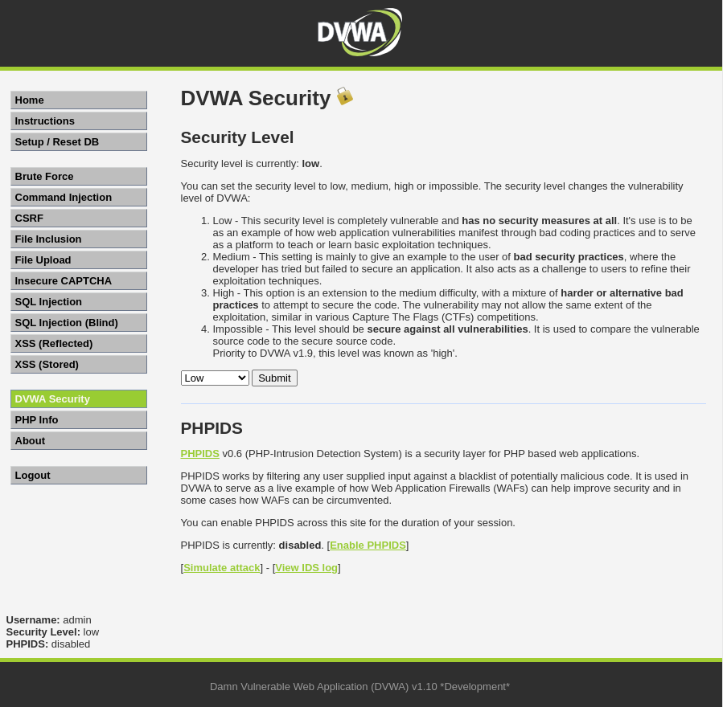
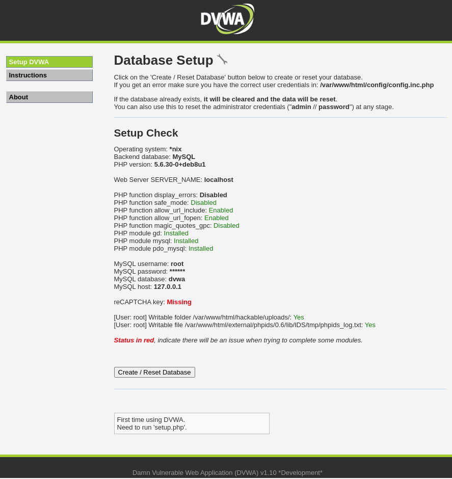

Un ataque de inyección SQL es un tipo de ataque de inyección de código que se dirige a las aplicaciones que utilizan bases de datos de tipo SQL; este ataque se realiza introduciendo un código SQL malicioso en las declaraciones SQL de entrada de una aplicación web.
Una inyección exitosa puede:
Nota
Un DBMS (Database Management System) es un sistema de gestión de bases de datos; es decir, un software que permite crear y administrar bases de datos.Ejemplos conocidos: MySQL, MariaDB, PostgreSQL, Microsoft SQL Server, Oracle Database, SQLite...
Existen muchos tipos de inyección SQL, pero los más comunes son:
Supongamos que tenemos una aplicación web que permite a los usuarios iniciar sesión con un nombre de usuario y una contraseña. La aplicación web utiliza una base de datos de tipo SQL para almacenar las credenciales de los usuarios.
La aplicación web utiliza la siguiente consulta SQL para verificar si el nombre de usuario y la contraseña proporcionados por el usuario son válidos:
SELECT * FROM users WHERE username = '<username>' AND password = '<password>'
users.Ahora, supongamos que el usuario introduce el siguiente nombre de usuario y contraseña:
administradorcontraseña' OR '1' = '1La aplicación web utiliza la siguiente consulta SQL para verificar si el nombre de usuario y la contraseña proporcionados por el usuario son válidos:
SELECT * FROM users WHERE username = 'administrador' AND password = 'contraseña' OR '1' = '1'
users.users.La consulta SQL devuelve una fila de la tabla users, por lo que la aplicación web permite al usuario iniciar sesión.
Nota
El truco está en que la expresión $1 = 1$ siempre es cierta, por lo que al comprobar si el usuario está registrado o $1 = 1$ es cierto, siempre se devuelve una fila deusersporque $1 = 1$ siempre es cierto.
El atacante ha utilizado una inyección SQL para engañar a la aplicación web y obtener acceso a la cuenta de administrador sin conocer la contraseña del administrador.
La vulnerabilidad del ejemplo anterior se produce porque la aplicación web no valida los datos de entrada del usuario antes de utilizarlos en una consulta SQL, lo que le permite a un usuario introducir caracteres especiales que alteran el significado de la consulta SQL.
Esta es la consulta del ejemplo anterior:
SELECT * FROM users WHERE username = '<username>' AND password = '<password>'
Se necesita colocar una sentencia SQL entre el último carácter de <password> y la comilla ' que cierra la contraseña.
La sentencia a colocar, para que encaje bien, debe empezar o contener una comilla ' (para que cierre la contraseña) y terminar sin comilla ' (porque se usará la que tenía la contraseña).
Por eso contraseña' OR '1' = '1 encaja bien.
Este laboratorio contiene la web DVWA, usada para aprender sobre vulnerabilidades web.
Si bien contiene vulnerabilidades de varios tipos, el objetivo de este apartado es la sección de Inyección SQL.
DVWA (Damn Vulnerable Web App) es una aplicación web PHP / MySQL de código abierto que es vulnerable de muchas formas. Su objetivo es ser un ejercicio de aprendizaje para ayudar a los desarrolladores web a probar vulnerabilidades con mayor facilidad.
Esta aplicación web cuenta con 4 niveles de dificultad: bajo, medio, difícil e imposible. El nivel de dificultad afecta a toda la página y por tanto, a todas las vulnerabilidades que contiene.
Se ha configurado la aplicación para que se ejecute en dificultad baja por defecto, aunque puede configurarse en la sección DVWA Security del menú izquierdo:

Credenciales del administrador:
admin.password.
Al acceder por primera vez a DVWA tendrás que inicializar su base de datos, para ello, simplemente:

Una vez hecho eso, DVWA está activa y lista para usar.
Recuerda
Tendrás que repetir estos simples pasos cada vez que inicies este laboratorio.